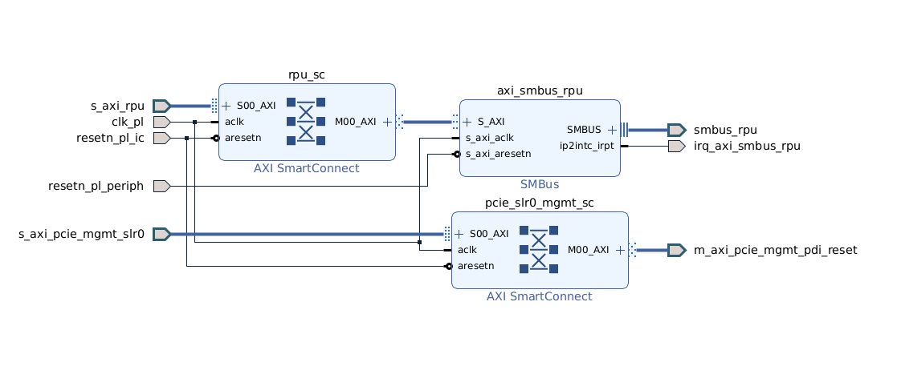

AMR V80 - Base Logic (V80-Specific)¶
For common base design concepts, see Common Base Design Philosophy
This document contains V80-specific implementation details and deltas from the common baseline.
V80-Specific Overview¶
The V80 base logic implementation uses CPM5 hardened PCIe with minimal PL IP instantiation.
V80-Specific Characteristics:
✓ CPM5 provides hardened PCIe Gen5 x8 and QDMA
✓ Minimal PL usage - only test hierarchy (SmartConnect + GPIO)
✓ No PCIe IP in PL - all PCIe functionality is hardened in CPM5
✓ Device IDs: 0x50b4 (PF0), 0x50b5 (PF1)

PF0 Configuration (V80-Specific)¶
CPM5 PF0 Settings¶
PF0 CPM5 Configuration:
Device ID: 0x50b4
Base Class: 12 (Processing Accelerators)
Sub Class: 00
Subsystem ID: 0x000e
Vendor ID: 0x10ee
PF0 BAR Configuration¶
| BAR | Size | Type | Prefetchable | Status |
|---|---|---|---|---|
| BAR0 | 16 MB | 64-bit, AXI_Bridge_Master | No | Enabled |
| BAR2 | 4 KB | 32-bit, AXI_Bridge_Master | No | Disabled |
Address Mapping:
PCIe BAR0 Address: 0x201_0000_0000
AXI Target Address: 0x0000020100000000
NoC Aperture: 16 MB (configured in axi_noc_cips M00_AXI)
NoC Remap: 0x201_0000_0000 → 0x1000_0000 (local address space)
PF0 Features¶
| Feature | V80 Setting |
|---|---|
| MSI-X | Disabled |
| Function Level Reset | Disabled |
| Extended Config Interface | Disabled (CFG_EXT_IF = 0) |
| Extended Config Space | None |
| ARI Capability | Disabled |
| ACS Capability | Disabled |
PF0 Current Usage¶
Base Design:
No hardware IP connected to PF0 address space
Address space reserved for future management IP
Management handled by firmware on RPU
Future Expansion Potential:
Identification/UUID ROMs
Management register blocks
Custom control interfaces
The AMC out-of-band path uses the AXI SMBus IP that is present in the loaded PL PDI (see Out-of-band (SMBus) Management). That is separate from the optional smbus_v1_1 IP in the Vivado IP repository, which is not instantiated in the V80 shell.
PF1 Configuration (V80-Specific)¶
CPM5 PF1 Settings¶
PF1 CPM5 Configuration:
Device ID: 0x50b5
Base Class: 12 (Processing Accelerators)
Sub Class: 00
Subsystem ID: 0x000e
Subsystem Vendor ID: 0x10ee
Vendor ID: 0x10ee
PF1 BAR Configuration¶
| BAR | Size | Type | Prefetchable | Status |
|---|---|---|---|---|
| BAR0 | 512 KB | 64-bit, DMA | Yes | Enabled |
| BAR2 | 256 MB | 64-bit, AXI_Bridge_Master | Yes | Enabled |
Address Mapping (BAR2):
PCIe BAR2 Address: 0x202_0000_0000
AXI Target Address: 0x0000020200000000
NoC Aperture: 1 GB (configured in axi_noc_cips M01_AXI)
Routes to: PF1 hierarchical block
DMA (BAR0):
512 KB address space for QDMA registers and descriptors
CPM5 hardened QDMA engine
PF1 Features¶
| Feature | V80 Setting |
|---|---|
| MSI-X | Enabled (8 vectors) |
| MSI-X Table Offset | 0x50000 |
| MSI-X Table Size | 8 entries |
| Function Level Reset | Disabled |
| DMA Type | CPM5 QDMA (hardened) |
PF1 Hierarchical Block¶
The PF1 hierarchy is common across boards but with V80-specific clock/address configuration:
| Component | IP Type | Instance Name | V80 Configuration |
|---|---|---|---|
| SmartConnect | xilinx.com:ip:smartconnect | smartconnect_pf1 | 1 slave (S00_AXI), 1 master (M00_AXI) |
| AXI GPIO | xilinx.com:ip:axi_gpio | axi_gpio_test_pf1 | Default: 0x000000F1, bidirectional |
| Processor System Reset | xilinx.com:ip:proc_sys_reset:5.0 | proc_sys_reset_0 | 100 MHz clock domain |
V80-Specific Configuration:
Clock: pl0_ref_clk (100 MHz) from CIPS
Reset: pl0_resetn from CIPS → proc_sys_reset_0
Connected to: axi_noc_cips M01_AXI
GPIO loopback: gpio_io_o → gpio_io_i
CPM5 Hardened PCIe (V80-Specific)¶
Key V80 Advantage: PCIe and QDMA are hardened silicon in CPM5.
CPM5 Benefits¶
✓ Zero PL resource usage for PCIe/QDMA
✓ Higher performance - Gen5 x8 (32 GT/s)
✓ Lower latency - hardened data path
✓ Hardened NoC connection - NMU_128 integrated
✓ Simpler timing closure - no PCIe in fabric
CPM5 Configuration Summary¶
| Parameter | V80 Value |
|---|---|
| PCIe Controller | Controller 1 (bottom x8 lanes) |
| Link Speed | 32.0 GT/s (Gen 5) |
| Lane Width | X8 |
| Functional Mode | QDMA |
| Mode Selection | Advanced |
| Total PFs Enabled | 2 (TL_PF_ENABLE_REG = 2) |
| MSI-X Options | MSI-X Internal |
Reference: See V80 CIPS Configuration for complete CPM5 settings.
NoC Connection (V80-Specific)¶
CPM5 to NoC¶
V80 Hardened Connection:
CPM5 connects to NoC via hardened NMU_128 interfaces
No PL IP required for PCIe to NoC routing
Direct connection to axi_noc_cips
AXI NoC CIPS Master Interfaces (V80):
| Interface | Aperture | Address | Remap | Target |
|---|---|---|---|---|
| M00_AXI | 16 MB | 0x201_0000_0000 | → 0x1000_0000 | PF0 address space (empty) |
| M01_AXI | 1 GB | 0x202_0000_0000 | (none) | PF1 hierarchy (GPIO test) |
Reference: See V80 NoC Configuration for complete NoC topology.
PL Resource Usage (V80-Specific)¶
V80 Base Design PL IP:
1× smartconnect (PF1)
1× axi_gpio (PF1)
1× proc_sys_reset (PF1)
Estimated Resources:
LUTs: < 2K (minimal - no PCIe/DMA in PL)
BRAMs: < 5
No QDMA resources needed (hardened in CPM5)
SMBus IP (Available but Not Instantiated)¶
Status: SMBus v1.1 IP is in the IP repository but not instantiated in V80 base design.
SMBus IP Details:
Vendor: xilinx.com
Version: 1.1
Implementation: SystemVerilog (smbus_v1_1_vl_rfs.sv)
Interface: S_AXI (AXI4-Lite slave)
Location:
ip/smbus_v1_1/Licensing: Requires download from https://www.xilinx.com/member/v80.html
To Add SMBus:
Connect to M_AXI_LPD interface
Wire IRQ 1 interrupt to CIPS
Update address map
Required for designs needing SMBus board management
Note: The SMBus IP must be present in iprepo directory for Vivado build to succeed.
|——–|—–|——| | PCIe Implementation | CPM5 hardened | PL PCIe IP (soft logic) | | PL Resource for PCIe | ~0 LUTs | ~54K LUTs (QDMA PL IP) | | QDMA Location | Hardened in CPM5 | PL IP instantiation | | NoC Connection | Hardened NMU_128 | PL NMU_512 | | Device IDs | 0x50b4, 0x50b5 | 0x5700, 0x5701 | | PCIe Speed | Gen 5 (32 GT/s) | Gen 3 (8 GT/s) | | Timing Closure | Easier (hardened) | Harder (PCIe in fabric) |